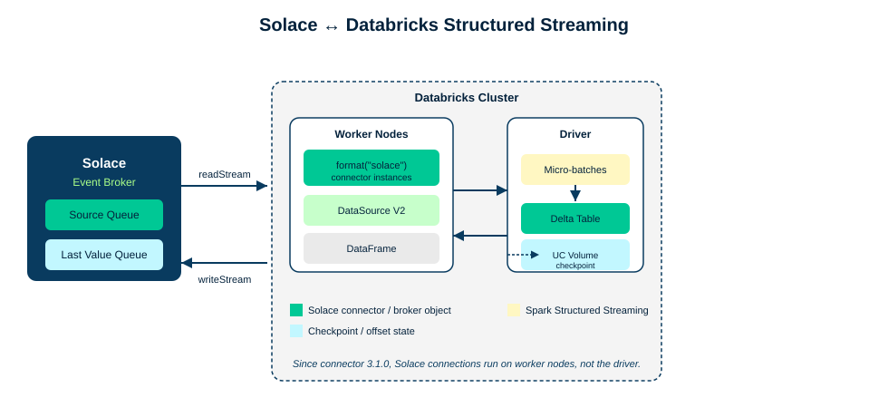

This codelab is written for Databricks. You will use the Solace Spark connector to move events between a Solace event broker and Spark Structured Streaming, running on a Databricks cluster.

The connector implements Spark's DataSource V2 API and registers itself under format("solace"). Once it's installed, moving data in either direction is a single Structured Streaming read or write:
- Read path: a Solace queue is consumed by connector instances that run on the Databricks worker nodes, and land as rows in a DataFrame you can transform and write to a Delta table.
- Write path: DataFrame rows go out through
writeStream.format("solace")and are published to a topic.
Pay attention to that "on the worker nodes" detail as you go through this codelab. It's the reason you'll set up a Last Value Queue in Step 3, and it's why Step 6 spends some extra time on checkpointing.
This codelab is written for Databricks, but self-managed Spark works too. Four steps differ, each one is called out inline in a Self-managed Spark box, and Appendix A pulls all of them together in one table.
Every code sample here is also available as runnable code in the spark-streaming/code folder: a Databricks notebook, a self-managed spark-submit project, a sample publisher, and a docker-compose.yml if you don't have a Databricks workspace handy.
Prerequisites
- A Solace event broker service (Solace Cloud, software broker, or appliance)
- A Databricks workspace with permission to create a cluster and install Maven libraries
- Basic familiarity with Spark Structured Streaming
What you'll learn
- How to provision the Solace broker objects the connector needs, including the Last Value Queue
- How to install the connector on a Databricks cluster and read Solace messages into a DataFrame
- How to checkpoint to a Unity Catalog Volume and survive a stream restart without losing or duplicating data
- How to publish DataFrame rows back to Solace as messages
- How to move credentials into Databricks secrets
- How to tune the connector for throughput, parallelism, and high availability
You need a Solace event broker to send and receive messages. Already have access to one with a message VPN? Skip to the bottom of this step and fill in the connection details table.
Sign up for a free Solace Cloud account and create a messaging service. It takes a couple of minutes and gives you a fully configured broker.
Alternative: software broker or appliance
- Software broker: run the free, feature-complete Solace Standard edition as a Docker container. See the Solace downloads page and the software broker quick start.
- Appliance: if your organization already runs a Solace appliance, ask your broker administrator for a message VPN and client username.
Find your connection details
Open the Solace Cloud console for your service and go to the Connect tab. You need the SMF host here, not the JMS URI. The connector talks to Solace over native Solace Message Format (SMF), not JMS.
Fill in this table now. You'll use every value in it for the rest of the codelab.
Value | Yours | |
SMF host (e.g. | ||
Message VPN | ||
Client username | ||
Client password | ||
Before the connector can read or write anything, you need a source queue and a Last Value Queue (LVQ) on the broker. This step is the same on every platform.
Create the source queue
- In Solace Cloud (or Broker Manager), go to Queues and create a new queue, for example
spark/orders/source. - Add a topic subscription for the topic the connector should consume, for example
solace/spark/stream/orders.

Create the Last Value Queue
Since connector 3.1.0, the Solace connection runs on the Spark worker nodes instead of the driver. That's better use of the cluster and better throughput, but it also means the worker nodes need somewhere to report their progress back to, since they're not talking to the driver directly anymore. That's what the LVQ is for. It sits on the broker next to the Spark checkpoint, and when the stream restarts, the connector reads it to figure out the last message it fully processed.
Create the LVQ manually with these properties:
Property | Value |
Access type | Exclusive |
Spool quota | 0 |
Owner | the client username the connector authenticates as |
Non-owner permission | No Access |
Subscription | the topic you will set as |
ACL | Publish and Subscribe on that topic |
Or let the connector create it for you: enable Allow Client to Create Endpoints on the client profile your connector's username uses, and grant Publish and Subscribe ACL on the LVQ topic. The connector creates the LVQ itself, with the right properties already set.
Create the cluster
Create a Databricks cluster on one of the two certified runtimes:
- DBR 15.4 LTS (Spark 3.5.0, Scala 2.12)
- DBR 16.4 LTS (Spark 3.5.2, Scala 2.12)
Install the connector
- On the cluster's Libraries tab, choose Install new → Maven.
- Enter the coordinates:
com.solacecoe.connectors:pubsubplus-connector-spark:3.1.7.
Create a notebook
Create a Python notebook and attach it to the cluster. Everything from Step 5 on runs here.
This part is the same everywhere. In your notebook, start a read stream against the source queue you created in Step 3:
df = (spark.readStream
.format("solace")
.option("host", "tcps://<host>:55443")
.option("vpn", "<vpn>")
.option("username", "<user>")
.option("password", "<password>")
.option("queue", "<source-queue>")
.option("lvq.name", "<lvq-name>")
.option("lvq.topic", "<lvq-topic>")
.option("connectRetries", 2)
.option("reconnectRetries", 2)
.option("batchSize", 100)
.option("partitions", 1)
.option("includeHeaders", True)
.load())
display(df)
Publish a few test messages to your source topic (Broker Manager's Try Me! panel works fine) and watch them show up:
Source schema
Every DataFrame the connector produces has this shape:
Column | Type | Meaning |
| String | Replication group message ID of the incoming message |
| Binary | Message payload |
| String | Partition key, if present in the message |
| String | Topic the message was published to |
| Timestamp | Sender timestamp if present, otherwise receipt time at the connector |
| Map<String, Binary> | Present only when |
Transform and write to Delta
Payload comes through as raw bytes, so cast it and parse it into a structured column:
from pyspark.sql.functions import col, from_json
parsed = df.select(
col("Id"),
col("Topic"),
col("TimeStamp"),
from_json(col("Payload").cast("string"), order_schema).alias("order"))
(parsed.writeStream
.format("delta")
.option("checkpointLocation", "<checkpoint-path>")
.toTable("orders_bronze"))
Leave checkpointLocation alone for now. Step 6 covers what needs to happen there on Databricks.
A few things to know before you touch any Databricks-specific options, since they apply on any platform:
- The connector acknowledges messages and writes processed message IDs to the Spark checkpoint once Spark signals commit, meaning Spark is done with that data.
- That's where the LVQ from Step 3 comes in: it holds the offset state so the worker nodes and the driver can agree on where to pick back up after a restart.
- Checkpoint writes can still fail, say during an instance crash. The connector handles duplicates in most cases, but keep your downstream systems idempotent anyway. That's the guide's own advice, and it's worth taking seriously.
Why Databricks needs extra options here
Databricks executor nodes can't reach Unity Catalog Volumes directly. So when your checkpoint path is a UC Volume, the connector has to authenticate through unified auth using a Databricks workspace-level service principal:
.option("sparkRuntimePlatform", "DATABRICKS")
.option("databricksSecretScope", "solace-dev-credentials")
.option("databricksHost", "databricks-host")
.option("databricksClientId", "databricks-client-id")
.option("databricksClientSecret", "databricks-client-secret")
.option("databricksClientSecretRefreshInterval", 1440)
Prove it survives a restart
Don't just take this on faith. Try it:
- With the stream running, publish a few messages and confirm they land in the Delta table.
- Stop the stream (
query.stop()in the notebook, or cancel the running cell). - Restart the read stream with the same
checkpointLocation,queue, andlvq.name. - Publish a few more messages and confirm the table picks up exactly where it left off, with no gap and no duplicates.
Now the other direction: turning DataFrame rows into Solace messages. This is the same on every platform.
query = (result_df.writeStream
.format("solace")
.option("host", "tcps://<host>:55443")
.option("vpn", "<vpn>")
.option("username", "<user>")
.option("password", "<password>")
.option("topic", "solace/spark/stream/processing/result")
.option("batchSize", 100)
.option("publishAckTimeout", 5000)
.option("publishAckTimeoutFailOnError", True)
.outputMode("append")
.option("checkpointLocation", "<uc-volume-path>")
.start())
Sink schema
Column | Required | Notes |
| Yes | The connector throws without it; used to track published-message state. Overridden by the deprecated |
| Yes | Binary. The connector throws without it. |
| Conditional | Required unless the |
| No | Matters when a partitioned queue subscribes downstream |
| No | Maps to Sender Timestamp on the outgoing Solace message |
| No | Applied only when |
Two publish patterns
writeStream as shown above covers most cases. If a single micro-batch needs to reach Solace and somewhere else too, like a second Delta table or an external API, reach for forEachBatch instead:
def send_batch(batch_df, batch_id):
(batch_df.write
.format("solace")
.option("host", "tcps://<host>:55443")
.option("vpn", "<vpn>")
.option("username", "<user>")
.option("password", "<password>")
.option("topic", "solace/spark/stream/processing/result")
.save())
batch_df.write.format("delta").mode("append").saveAsTable("orders_published")
(result_df.writeStream
.foreachBatch(send_batch)
.option("checkpointLocation", "<uc-volume-path>")
.start())
Go back to the read stream you wrote in Step 5 and delete the plaintext username and password values. If the connector's running on Databricks, there's no reason not to use Databricks secrets instead.
.option("host", dbutils.secrets.get(scope="solace-dev-credentials", key="host"))
.option("vpn", "default")
.option("username", dbutils.secrets.get(scope="solace-dev-credentials", key="username"))
.option("password", dbutils.secrets.get(scope="solace-dev-credentials", key="password"))
The same pattern works for OAuth. Pull solace.oauth.client.client-id, solace.oauth.client.credentials.client-secret, and solace.oauth.client.auth-server.truststore.password from the scope, and set solace.apiProperties.AUTHENTICATION_SCHEME to AUTHENTICATION_SCHEME_OAUTH2.
.option("solace.apiProperties.AUTHENTICATION_SCHEME", "AUTHENTICATION_SCHEME_OAUTH2")
.option("solace.oauth.client.client-id", dbutils.secrets.get(scope="solace-dev-credentials", key="oauth-client-id"))
.option("solace.oauth.client.credentials.client-secret", dbutils.secrets.get(scope="solace-dev-credentials", key="oauth-client-secret"))
.option("solace.oauth.client.auth-server.truststore.password", dbutils.secrets.get(scope="solace-dev-credentials", key="truststore-password"))
Parallelism
partitions controls how many consumers read from the queue at once, spread across your worker nodes. It defaults to 1.
Throughput
batchSize defaults to 1, which is why a connector you haven't touched yet feels slow. Whatever value you pick, set Maximum Delivered Unacknowledged Messages on the source queue (Step 3) to twice that. queue.receiveWaitTimeout (default 10000 ms) controls how long the connector waits before it submits a partial micro-batch instead of waiting for a full one.
Idle connections
connectIdleTimeoutInMillis and connectIdleTimeoutCheckInMillis are both off by default, and you need to set both to turn the feature on. It's worth doing on long-running clusters where Spark sessions don't shut down cleanly. When an idle connection closes, any pending unacknowledged messages get redelivered, so make sure your downstream is idempotent. The connection comes back on restart, or as soon as new messages arrive while the job is running.
Replay
Set replayStrategy to BEGINNING, TIMEBASED, or REPLICATION-GROUP-MESSAGE-ID, along with whichever of replayStartTime (format yyyy-MM-dd'T'HH:mm:ss), replayStartTimeTimezone (default UTC), or replayReplicationGroupMessageId the strategy needs. This is how you rebuild a Delta table without republishing source data, and it needs the replay log turned on at the broker.
Recovery edge cases
ackLastProcessedMessagesacknowledges the previous run's messages on restart. Only use it if downstream genuinely finished processing them, and note it does nothing if a replay strategy is set.ignoreCheckpointMessageIdComparisonErrorhandles messages arriving from a different replication group. Left at the default (false), the connector throwsSolaceReplicationGroupMessageIdNotComparableExceptionand stops. Set it totrueand it logs a warning and treats the message as new, with no deduplication.
High availability and disaster recovery
connectRetries, reconnectRetries (default 3), connectRetriesPerHost, and reconnectRetryWaitInMillis (default 3000) control how the connector reconnects, and you can give it a comma-separated host list for active and standby sites. Set any of the retry counts to -1 to retry forever.
Cluster policy gotcha
Remember the Shared compute permission from Step 4? It bites in production too: a cluster policy change can quietly remove the ability to install the connector library, and the first sign is a job that stopped working with no code change behind it. Photon turning back on after a cluster clone is the same story.
Escape hatch
Anything you can't set directly, solace.apiProperties. passes straight through to the underlying Solace Java API, for example solace.apiProperties.reapply_subscriptions=false or solace.apiProperties.pub_ack_window_size=50. The JCSMPProperties documentation has the full list.
You now know how to:
- ✅ Read Solace messages into a Spark DataFrame, on worker nodes, with a Last Value Queue backing recovery
- ✅ Write DataFrame rows back to Solace as messages
- ✅ Checkpoint to a Unity Catalog Volume and survive a stream restart without losing or duplicating data
Keep going
- Runnable code assets for this codelab: the Databricks notebook, the self-managed project, the sample publisher, and docker-compose
- Solace connector for Spark on the Databricks Hub
- Apache Spark Hub entry
- SolaceProducts/pubsubplus-connector-spark on GitHub
- Solace Spark connector user guide
- Solace Community
Comparing stream processors? Try the Solace and Apache Flink codelab next.
Thanks for completing this codelab! Let us know what you thought in the Solace Community Forum. If you found any issues along the way, use the Report a mistake button at the bottom left of this page.
Not on Databricks at all? Here's every difference from the steps above in one place, plus the self-managed authentication options in full.
Step | On Databricks | On self-managed Spark |
Install (Step 4) | Cluster Libraries → Maven |
|
Platform option (Step 4) |
| Set |
Runtime (Step 4) | DBR 15.4 LTS or DBR 16.4 LTS | Spark 3.5.x, Scala 2.12, JDK 11 |
Checkpoint (Step 6) | Unity Catalog Volume plus workspace service principal | S3, HDFS, or another shared filesystem. No |
Credentials (Step 8) |
| OAuth2 client credentials, rotating token file, or client certificate |
Parallelism (Step 9) |
|
|
Self-managed authentication options
1. OAuth2 client credentials
.option("solace.apiProperties.AUTHENTICATION_SCHEME", "AUTHENTICATION_SCHEME_OAUTH2")
.option("solace.oauth.client.auth-server-url", "<auth-server-url>")
.option("solace.oauth.client.client-id", "<client-id>")
.option("solace.oauth.client.credentials.client-secret", "<client-secret>")
.option("solace.oauth.client.auth-server.truststore.file", "<truststore-path>")
.option("solace.oauth.client.token.refresh.interval", 60)
Keep the refresh interval (default 60 seconds) shorter than your token's expiry.
2. Rotating token read from file
.option("solace.oauth.client.access-token", "/absolute/path/to/token")
.option("solace.oauth.client.token.refresh.interval", 60)
A token loses some of its lifetime between being written and being read, so keep that gap small. If the file stops updating, the connector retries according to reconnectRetries, then gives up.
3. Client certificate
.option("solace.apiProperties.AUTHENTICATION_SCHEME", "AUTHENTICATION_SCHEME_CLIENT_CERTIFICATE")
.option("solace.apiProperties.SSL_TRUST_STORE", "<truststore-path>")
.option("solace.apiProperties.SSL_KEY_STORE", "<keystore-path>")
Set the matching truststore/keystore format and password properties alongside these.
Dependency and spark-submit reference
Maven:
<dependency>
<groupId>com.solacecoe.connectors</groupId>
<artifactId>pubsubplus-connector-spark</artifactId>
<version>3.1.7</version>
</dependency>
sbt:
libraryDependencies += "com.solacecoe.connectors" % "pubsubplus-connector-spark" % "3.1.7"
A complete spark-submit command for a self-managed cluster:
spark-submit \
--packages com.solacecoe.connectors:pubsubplus-connector-spark:3.1.7 \
--conf spark.executor.instances=3 \
--class com.example.SolaceSparkJob \
./solace-spark-selfmanaged.jar \
--sparkRuntimePlatform OTHER